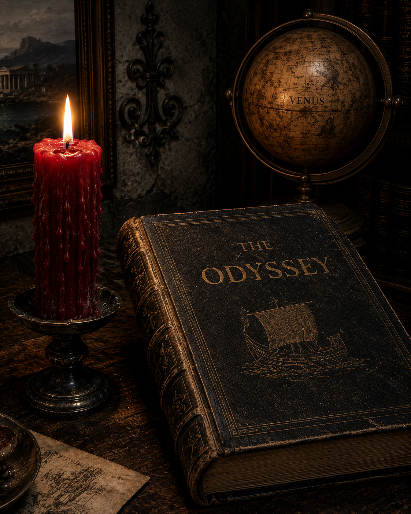

Silence of Wax
May 24, 2025
Long crimson tears sink through the melted nights.
Winter is gone, with it the muddy snow
that saved our last embrace, immaculate.
Spring and chirping birds — I hear only the ice chipper
like a hammer that never stops banging
and banging on the imprisoned memories
that the spring wind has finally released —
cold roaming phantoms set free to hunt me,
like shooting stars sweeping through Boston's streets.
You paused at my door, a bright startle in the dark —
then gone. A single bullet star shot into a lost future.
What if your car had alighted on Venus' shores
for a long night of smiles and laughter, hugs and kisses?
There, warm threads of silk no hand can ever unweave
hold back all seasons. There, snowflakes bite like mosquitoes,
turn men blind to death and deaf to the buzzing clock.
Angel of Time — undie our lost songs,
our lost dances. Kill your silence of wax:
ask me to be your Bloody Mary strawberry,
your wicked nun in a scarlet bikini.
Meet me by the red light at twilight.
Let our Odyssey begin. Let us return
to the halcyon of Allston's private beach,
to the edges of the volcano de Fuego.
Let it be, let it happen.
· · ·
Context & Notes
An elegy for a lost love: a passionate summer in Boston, undone by the winter that followed. The poem dreams of escape to Venus — where a day is longer than a year — as if stretching time itself could give the two lovers another chance.
Previous Versions
February 9, 2026
A ticket to Cuckooland:
I dare you - take it or lose it.
No passport needed.
For a night of eternity,
let me be your Bloody Mary strawberry,
your naughty nun in a sexy bikini.
I will be waiting by the red light
before our Odyssey starts.
You know too well the drive.
This time, let’s take a different path.
Happy he, who like Ulysses, would return
to the halcyon of Allston’s private beach.
Happy she, who like Penelope, would meet again
the burning shores of el Volcán de Fuego.
Let the horizon move further back at every step we take.
Let our laughter echo ceaselessly into the restless world.
Let our hug be the secret refuge from our troubled lives.
Let it be. Let it happen.
April 6, 2026
Long crimson tears dry through the melted nights spread away from you
A faint blazing breath survives the errands from your waxy silence
Comments
If this poem stirred something in you, share a thought below.